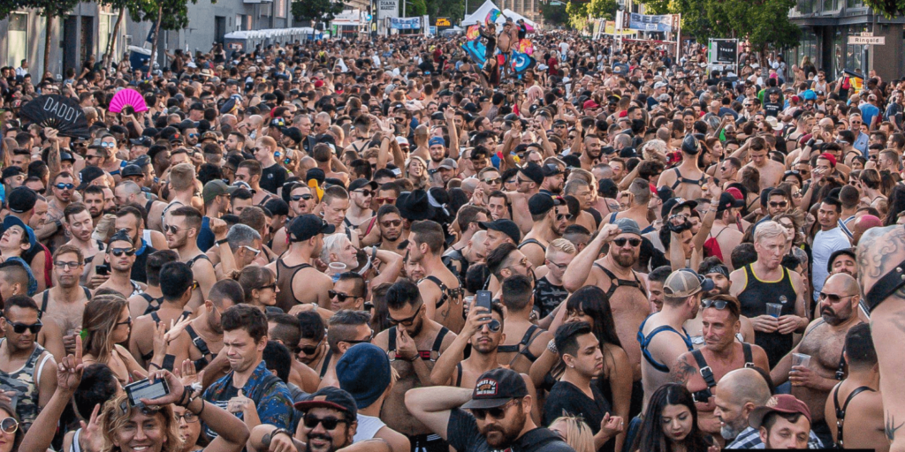
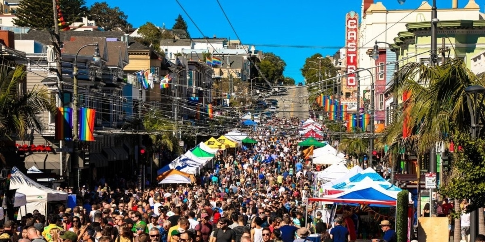
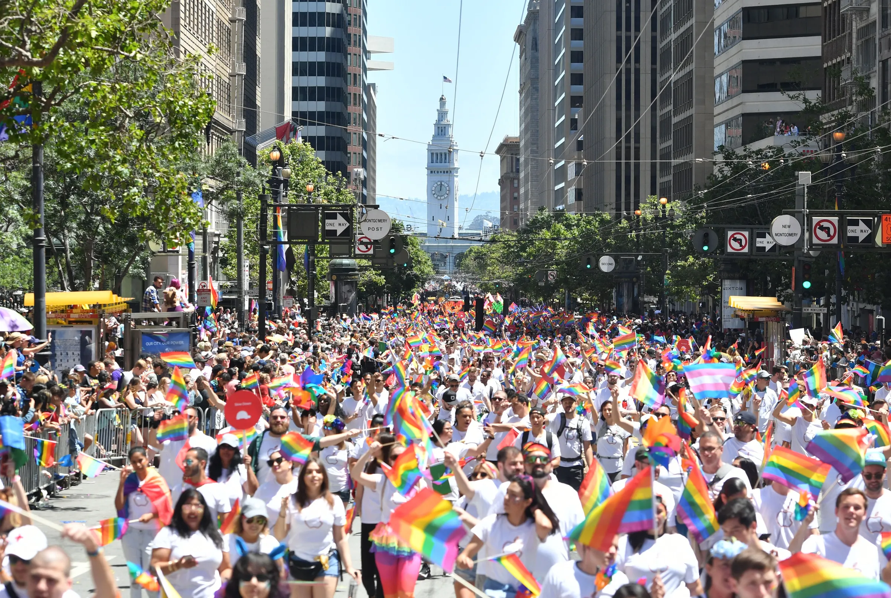
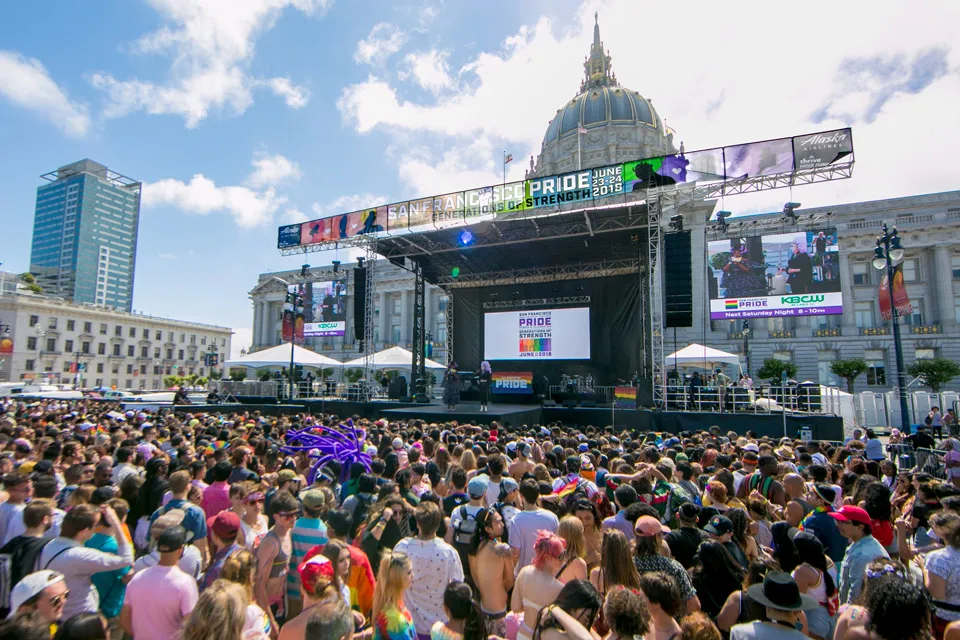

Community, Culture, and Commerce
Learn more about the San Francisco Street Fair Coalition
Learn more Donate



The San Francisco Street Fair Coalition (SFSFC) is a vibrant network of organizations dedicated to fostering San Francisco's unique street fair culture. We're bringing together the diverse threads of community-driven celebrations, artistic expression, culinary delights, and grassroots activism, converging in the heart of the city's streets.
Advocacy: We champion the value of street fairs, lobbying for fair permitting procedures, advocating for sufficient resources, and ensuring street fairs remain accessible to all communities.
Support: We are a resource hub for existing and aspiring street fair organizers, offering logistical guidance, networking opportunities, and education on topics like vendor management, safety protocols, and fundraising.
Collaboration: By facilitating communication and fostering partnerships between street fair organizers, we encourage cross-pollination of ideas, resource sharing, and joint initiatives to strengthen the overall street fair scene.
Community: We promote street fairs as platforms for community engagement, celebrating the city's diverse cultural heritage, and fostering a sense of belonging and inclusion. We encourage street fairs to highlight local artists, musicians, and businesses, as well as address social issues and offer educational opportunities.
Innovation: We embrace creativity and experimentation, encourage sustainable practices, explore new technologies, and support innovative forms of street fair expression.
Visibility: We raise the profile of San Francisco's street fairs on a local and national stage, showcasing the city's arts and culture and the economic, social, and cultural benefits of our lively gatherings.
The San Francisco Street Fair Coalition is more than just an organization. We're a vibrant community supporting San Francisco's unique street fair culture and we hope you join us!